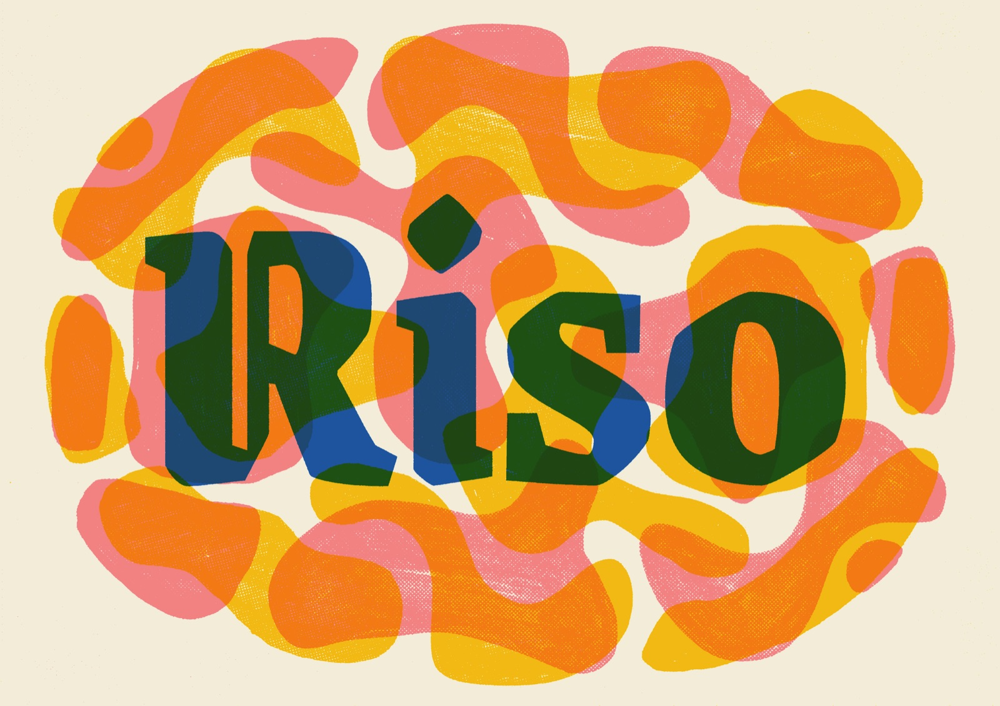
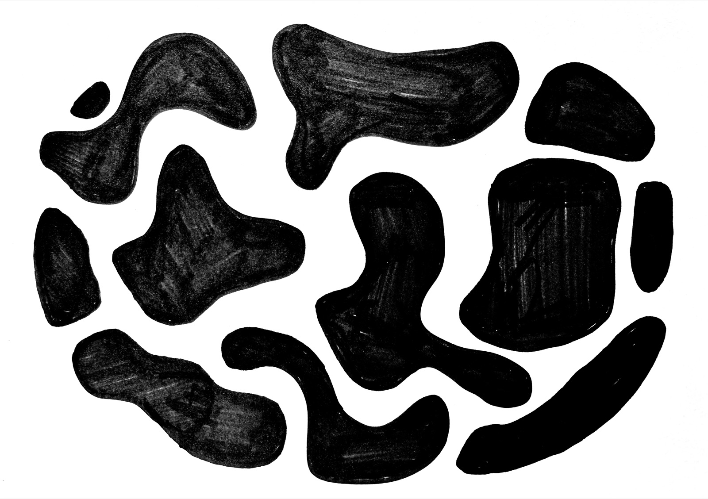
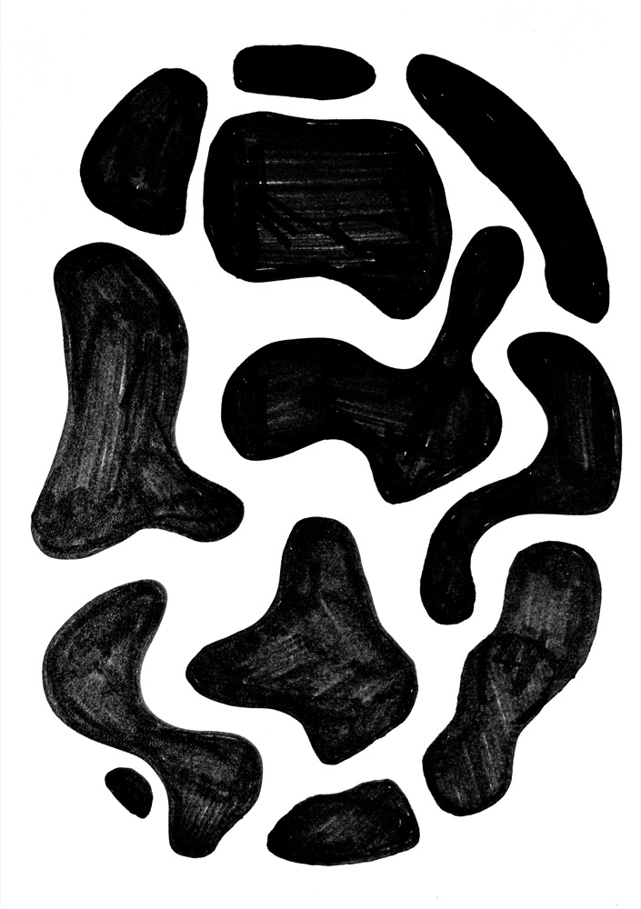
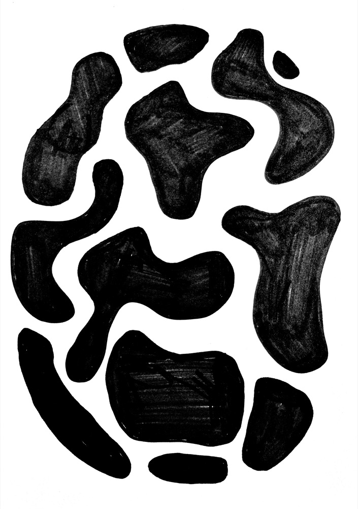
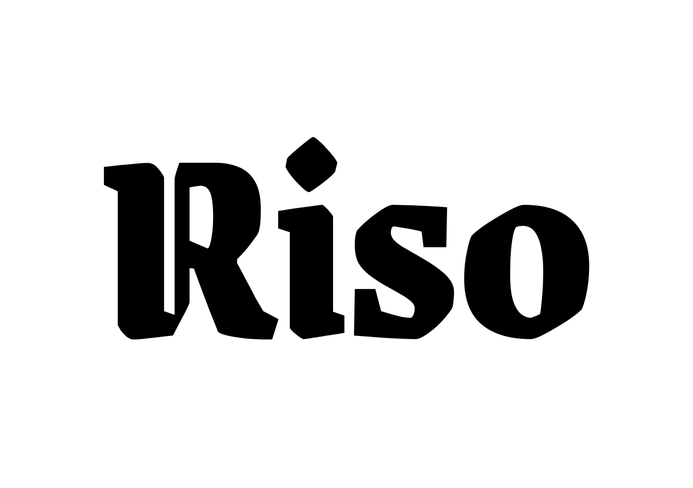
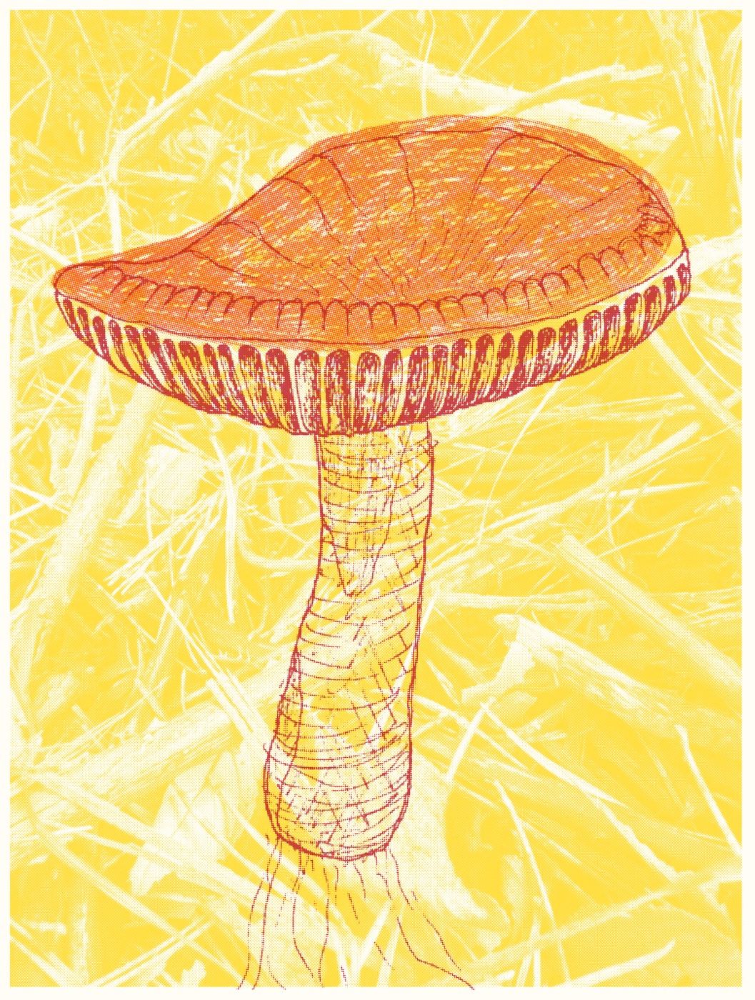
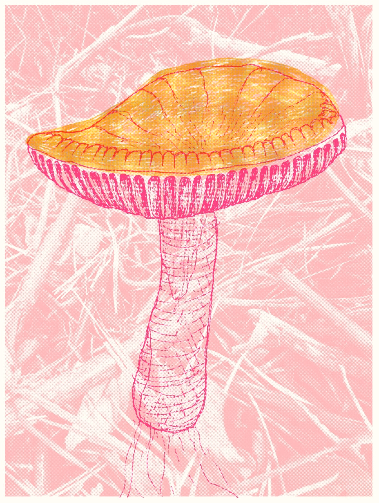

Chunky shapes and one big word, overprinted until the inks run into each other. You need a thick marker,
your phone and a font you like. No drawing skills needed.

01 Fill a sheet with shapes
Draw blobby shapes with a thick black marker, like a Sharpie, and colour them in solid. Leave gaps of white between them.
The gaps are where the other layers show through.
Scan it with your phone. On an iPhone, open Notes or Files and choose Scan Documents.

02 Duplicate it and rotate the copy
One drawing can give you several layers. In Photos, open the scan, tap the More button and choose Duplicate,
then rotate the copy with Edit → Crop → Rotate. Turned round, the same shapes land somewhere new
and cross the originals in ways you wouldn't plan.
Want a third layer? Rotate another copy by a different amount, or flip it.

The scan.

A copy, rotated 180°.
03 Set a word in a font
Open a font on Google Fonts, type your word into the preview box and turn the size right up. This one is
Grenze Gotisch.
Take a screenshot of the word, black on white.
Crop the screenshot to the same shape as your scan so the layers line up. If the scan is portrait and you want the word
to run along the long edge, turn the screenshot on its side, then turn the finished print back at the end.

04 Overprint the lot
Open Risolino and drop in the shapes, the rotated copy and the word together.
Give the shapes light, bright inks. Put the word at the top of the layer list in a dark ink, so it reads over everything.
For the doubled lettering on the cover, add the word twice in two inks. Then use Compose to nudge one copy a little,
so the two look like passes that didn't quite line up.
Download the print, and rotate the PNG back if you worked on its side.
Try it with these
Grab the shapes scan and the
word, make a rotated copy of the shapes, and drop them all into
Risolino.
Mushroom print
A riso prints one ink at a time, so you draw one sheet per ink. Here's a mushroom from start to finish:
a photo, two drawings, a phone scan, and a few minutes in Risolino.

01 Find a reference
Anything with clear shapes works. This one's a russula from a walk in the woods: a red cap, white gills and stem,
and a lot of leaf litter that won't make the drawing.
02 Draw one sheet per ink
Draw everything in black, on plain white paper, one sheet for each colour. You choose the colours later.
Use the same paper size for each sheet and keep the drawing in the same place on each one. Tracing over the first sheet on a window or light box is the easy way.
How dark you draw sets how heavy the ink is. Solid black prints solid colour, and lighter hatching prints as a lighter tint.
Line. The outline, gills and stem.Wash. Just the cap.
03 Scan them with your phone
On an iPhone, open Notes or Files and choose Scan Documents. Scan the sheets in order, one page each,
and save. You get one PDF with a page for each layer. Any scanner works, as long as the background comes out white.
04 Drop the PDF into Risolino
Open Risolino and drag the PDF onto the page. Each page becomes a layer,
in grayscale: black is full ink and white is bare paper. Click a layer's colour strip to choose an ink.
Layers print from the bottom of the list up, so drag the handles until the line layer is on top.
05 Add a background
Drop in any photo as a background texture. It's added as another layer and turned to grayscale like the scans, so its shapes print in whatever ink you give it.
For a lighter effect, turn on Advanced layer options and lower that layer's opacity.
Paper size: Smallest layer crops everything to the smallest layer, here the scans, so the photo behind fits the drawing.
Paper color: the ink is see-through, so the paper shows through everything. Try a few.
Shading: Dot screen gives classic halftone dots, as in these prints, and Grain turns tints into a modern riso stipple.
Registration jitter: real passes never quite line up. Hit Re-roll until you like how they've landed.
If a layer needs nudging into place, Compose lets you drag it around and resize it by its corners. Click the preview to look at it at 100%.
The zoomed-out view can shimmer, and the detail is where it pays off:
At 100%: every tint is a field of dots, and each ink sits slightly off the others.
07 Download, then try another
Download saves a full-resolution PNG. The layers stay where they are, so you can swap the inks and the paper and download again.
Try lots of colours. The same three layers give a very different print with each set of inks. Put a dark ink on the line and a light one on the wash,
then swap them round. Or keep everything in one family, like pinks over pink. The background ink sets the mood of the whole sheet:
yellow feels warm and lilac feels quiet.

Try it with these
Grab the two scans (PDF) and the
background photo, drop them into
Risolino, and make your own version.
Everything runs in your browser and nothing gets uploaded.
Page
Every control in Risolino, grouped by what it changes. This page covers the buttons under the preview, which act on the whole print.
The defaults make a good print, so change one thing at a time and watch what it does.
Each control comes with a Start with suggestion: a safe place to begin, and when it's worth changing.
Fit and 100%
Fit shows the whole sheet. 100% shows it pixel for pixel, and you can drag to look around. You can also click the preview to switch. The zoomed-out view can shimmer with patterns that won't be in the download.
Start withFit while you set things up. Check at 100% before you download.
Re-roll
Picks a new random misalignment for every layer. It only shows while Registration jitter is on, and the download uses whichever one you can see.
Start with Re-roll a few times. A small shift changes where colours touch and where paper shows between them.
Download
Saves the print as a full-resolution PNG. It matches the preview exactly, misalignment and all. The button shows the size you'll get.
Paper
The sheet you print on: how big it is, what colour it is, and how your layers sit on it.
Paper size
How big the sheet is. Largest layer fits the sheet to your biggest layer. Smallest layer crops everything
to your smallest one. Zine (A3) and Drawing (A4) are fixed sheets at 300dpi, and OG:Image
is 1200×630px for link previews.
Start withLargest layer. Switch to Smallest layer when a photo is bigger than the drawing it sits behind.
Paper color
The colour of the sheet. Riso ink is see-through, so the paper tints every colour printed on it. Click the swatch for
a preset, or type a hex code.
Start withEggshell, the default. Natural and Stone make bright inks look warmer and older.
Scale to paper
Resizes every layer to the sheet. Fit shrinks or grows each layer to fit inside the paper. Fill makes
it cover the paper and crops what spills over. Off leaves each layer at its own size.
Start withOff for scans of the same sheet. Try Fit when your layers are different sizes, like a screenshot and a scan.
Margin
Adds bare paper around the artwork, in pixels of the finished image.
Start with 0. Add some when you want a border round the print.
Safe area
Keeps ink off a strip round the edge of the sheet, like the rim a real riso can't print on. Artwork under the
strip is hidden, not moved.
Start with 0. Raise it when artwork running off the edge looks too digital.
Ink
How the ink behaves: how far it spreads, how it prints lighter tones, how the passes line up and how colours mix.
Ink spread
Lets ink creep a little past its edges, the way it soaks into real paper. Printers call this dot gain.
Spread amount sets how far it goes.
Start with On, at the default amount. It takes the crisp digital edge off without blurring the drawing.
Shading
A riso can only print ink or no ink, so every lighter tone becomes a pattern. Dot screen is classic halftone
dots on an angled grid. Grain is a fine scattered stipple, like modern riso output. Gradient keeps
tones smooth, which no real riso can do.
With Dot screen, Dot spacing sets the size of the dots. Auto angles gives each layer its own
angle, which stops two grids making a shimmering moiré pattern. Turn it off to set one Screen angle yourself.
With Grain, Grain size sets how coarse it is.
Start withDot screen with Auto angles on. Try Grain for photos and soft pencil, where dots can look mechanical.
Registration jitter
Shifts and tilts each layer by a small random amount, because passes through a real riso never line up exactly.
Jitter amount is a percentage of the sheet's longer edge. Re-roll, under the preview, picks a new random set.
Start with On, at the default 0.34%. That's about 1mm on an A4 sheet, the drift of a real machine. Re-roll until the misalignment falls somewhere you like.
Ink blending
How inks mix where they overlap. Realistic mixes them like pigment, so blue over yellow makes green.
Simple multiplies the colours, weighted by how opaque each ink is. Off treats every ink like coloured film.
With Realistic, Order weight makes lower layers count for slightly more, because the first ink down
soaks deepest into the paper.
Start withRealistic, with Order weight at its default.
Layers
The controls on each layer in the list, and how to move layers into place. Click a layer's name to rename it.
Order
Drag a layer by its handle to move it up or down the list. Layers print from the bottom up, so the top layer lands last and sits over everything else.
Start with The darkest ink, usually the line work, at the top.
Colour
Click the colour strip to choose the layer's ink. The palette is based on real riso inks, and each has its own coverage: Black hides what's under it, Yellow barely tints it.
Start with Light, bright inks for big areas and a dark one for detail.
Source
Click the thumbnail to swap in a different image. The layer keeps its ink, its place in the list and its position, so you can redraw a sheet and drop the new scan straight in.
Start with Replace rather than delete when you rescan a drawing.
Delete
The × beside the layer's name removes it. There's no undo, so you'll need to add the image again to get it back.
Compose
The quickest way to line layers up. Hit Compose under the preview and it turns into a light table: every layer
becomes a coloured outline with its artwork faintly showing, so you can see how they stack and where the edges fall.
Pick a layer, in the preview or by its dot in the layer list. Drag it to move it, or drag a corner to resize it. Hit
Exit compose mode when you're done. The preview stays at Fit while you compose.
Advanced layer options
Turn on Advanced layer options at the bottom of the Layers panel to add three controls to every layer. Turning it off
hides them again but keeps what you set. Scale and Offset are the typed version of Compose: drag a
layer there and these numbers change with it.
Opacity
How much ink the layer puts down, from 0 to 100%. Lower it to fade a layer back without changing its ink.
Start with 100%. Drop a background photo to around 40–60% so it stays behind the drawing.
Scale
Resizes the layer from 10% to 200% of its size. It applies on top of Scale to paper, so a layer fitted to the sheet can still be made bigger or smaller.
Start with 100%, and resize by eye in Compose.
Offset
Moves the layer from its centred position. X moves it right and Y moves it down, both in pixels of the finished print. Negative numbers go the other way.
Start with 0, 0. Type numbers when you need an exact match, like two copies of a word offset by the same amount.